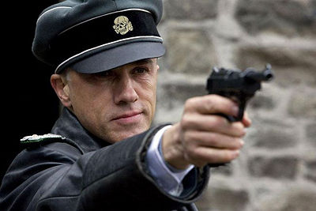

Ryan's Fictional Character: Hans Landa

This character I would not say that I specifically "admire".
However I do think that he is one of the best fictional characters that come to mind.
Hans Landa (portrayed by Christoph Waltz) is the main antagonist
in Quentin Tarantino's film Inglorious Bastards.
He is an Austrian SS officer whose primary task is finding and executing all of the Jews hiding out in Occupied France. Landa
is extremely cunning and can persuade almost anyone to confess critical information. Waltz's spectacular performance of this
devious character lead him to win the 2010 Oscar for Best Supporting Actor.
There are limitless reasons why I chose Hans Landa as my character. I have tried to narrow it down to a short list of explanations:
-
Fully Developed Character:
-
The very first scene of the movie gives me goosebumps every time.
Hans' character is fully developed within the first 20 minutes.
He initially comes in as soft-hearted and polite. But, almost instantaneously,
he takes complete control of the situation and shows no mercy.
-
Range of Emotions:
-
Feeding off the fully developed character, Hans used his control of his
emotions to take manipulate every sitation he was placed in. Not only did
Hans know how to make people open up to him in conversations, but he also
could turn the tables very quickly and make the conversation extremely
uncomfortable while remaining stern and cool. He has a menacing stare
that pierces right through the audience.
-
Multi-Lingual
-
Cristph Waltz is extremely fluent in German, French, and English. Hans fully
expresses all three languages eloquently throughout the entirety of the film.
His transitions are as smooth as silk. There are multiple scenes where he will
start with one language, move into another, and quickly back to the initial without
taking a breath. Thank goodness there were subtitles, or else I would never be able
to keep with which language he was using.